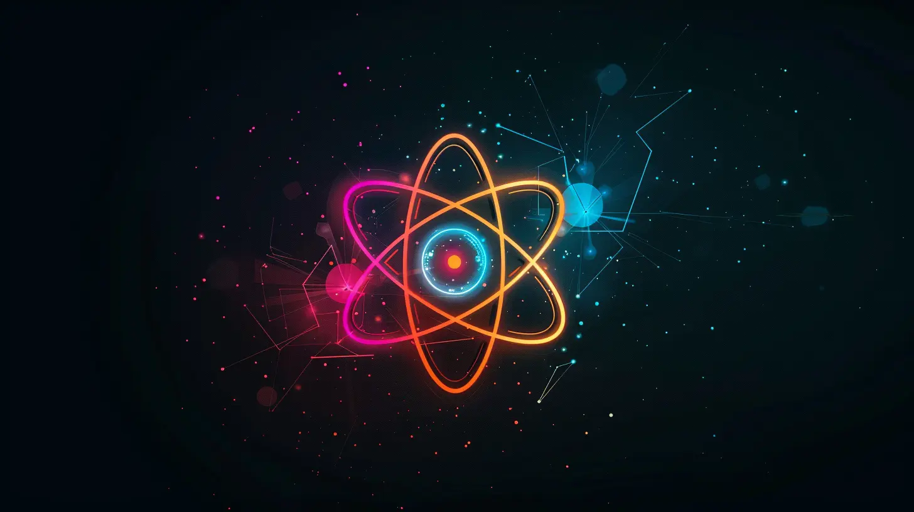

<article class="max-w-4xl mx-auto p-8 bg-black text-white">
    <h1 class="text-4xl font-bold text-center mb-8 title_hero ">Fede Moderna</h1>
    
    <p class="text-lg mb-4">
    Ci sono state varie trasformazioni del mio <i>credo</i>, durante gli anni. Da «Dio esiste e vive a Roma», passando da 
    «Siamo come delle lampadine, una volta che spegni la luce, il nulla» e i successivi passaggi che tendono sempre meno a 
    trovare risposte.
    </p>    
    <p class="text-lg mb-4">
    Penso che in tanti al giorno d'oggi condividano con me un particolare tipo di <i>cammino spirituale</i>. 
    </p>
    <p class="text-lg mb-4">
    Sono cresciuto in una famiglia non particolarmente praticante, ma comunque sono battezzato, comunato e cresimato. 
    Ho fatto pure il chirichetto. Comunque figlio degli anni '90 e cresciuto nel loro <a class="link" href="https://it.wikipedia.org/wiki/Utopismo_tecnologico">soluzionismo tecnologico</a>,
    ho abbandonato presto gli insegnamenti della Santa Sede per colpa delle troppe risposte incongruenti.
    Ma soprattuto perchè mi si apriva davanti un'alternativa molto più allettante: La Scienza.
    La Scienza, con la s maiuscola, aveva tutte le risposte e le spiegava pure, senza lasciare spazio a sacri cannibalismi o zombie benevoli.
    Ero affascinato dalla precisione, dall'eleganza delle formule e dalla promessa che la scienza non sbaglia mai. Negli anni
    della formazione e dell'adolescenza penso sia normale ricercare un punto fisso. Io lo avevo trovato nell'approccio razione 
    che mi infondeva senso di sicurezza e comprensione del mondo. La logica è una lente che può essere usata in ogni occasione
    per affrontare i problemi e analizzarli al meglio, per trovare una soluzione ( certo come no...). Alletantissima e utilissima
    questa nuova presenza dai dettagli cromati e i circuiti zippanti, delle ATP sintetasi e le Intelligenze Artificiali.
    Come fanno quelle persone che vanno ogni domenica in chiesa a non vedere la verità? Come fanno a non capire che stanno vivendo
    una delusione, stanno inseguendo una bugia? Arrivai a disprezzarli silenziosamente per un certo tempo e a disprezzare me stesso,
    per la mia cultura satura di riferimenti alla cristianità. Dall'archittettura al linguaggio (madonna mia!) alle feste comandate, onnipresente.
    Mi stavo evolvendo per <a class="link" href="https://it.wikipedia.org/wiki/Schismogenesi">schismogenesi</a>, ovvero questo io non 
    lo faccio perchè lo fa quel particolare gruppo di persone che io non sopporto. Non c'era un possibile dialogo tra me e i «credenti».

    </p>
   
<p class="text-lg mb-4">
    Ci è voluto tempo per capire che non avevo perso la mia fede, ma l'avevo semplicemente sostiuita. Se vogliamo nella scala dei
    numeri l'ateismo è un «0», ma è comunque un numero. Arrivai alla conclusione che vera assenza di religione è la qualità che le maggiori religioni monoteiste non hanno:
    il rispetto per qualsiasi altro credo. Il non voler <i>convertire</i> le altre persone alla verità.
    </p>

    <p class="text-lg mb-4">
    Favoloso! Una nuova era di comprensione si era aperta ai miei occhi e mantenevo il mio punto fermo che mi dava sicurezza
    e speranza per un futuro sempre migliore. O almeno così era finche non sono entrato in un ambiente <i>scientifico</i>, quale 
    l'università, in particolare Ingegneria Informatica. La prima rottura la ebbi perchè iniziai a capire effettivamente chie
    cosa fosse la scienza. Niente è esatto niente è sicuro, per definizione. Tutto è il più esatto possibile per gli strumenti 
    a nostra disposizione. Tutto è tanto sicuro quanto necessario per le sue applicazione ( c'è sempre un livello di incertezza
    che diventa trascurabile in alcuni campi, ma critico in altri). Da un punto di vista filosofico i <a class="link" href="https://it.wikipedia.org/wiki/Teoremi_di_incompletezza_di_G%C3%B6del">teoremi di incompletezza di Gödel</a> 
    dettero una bella botta. In poche parole, questi due teoremi rivelano che ogni sistema matematico complesso contiene verità che non possono essere provate all'interno di quel sistema e non può dimostrare la propria coerenza senza contraddizioni.
    Storie pesanti.
    </p>
    <p class="text-lg mb-4">
    Invece dal punto di vista etico/morale il mondo accademico ha dato la botta finale. Vedere in prima persona quel mondo tanto idealizzato all'opera
    ha fatto calare ogni possibile velo di magia (o per meglio dire santità).
    In quel momento ero a tutti gli effetti un senzaddio. E ai tempi della mia fede nel progresso pensavo che questo sarebbe stato per me un
    momento di grande liberazione, di vero libero arbitrio. Bhè non è vero, è stato per lo più un momento di incertezza.

    Ma come disse un grande saggio che ho imparato a conoscere molto bene: <i>La ciotola è utile quando è vuota</i>.
    Infatti fu proprio in questo periodo che un mio caro amico mi parlò di un suo interesse: il buddhismo zen. Mi consigliò vari libri e via via che leggevò mi 
    appasionai al <i>padre</i> cinese dello zen, il taoismo ( o daoismo come vi aggrada). Il Taoismo è una religione a tutti gli effetti, ma secondo me si può vivere
    facilmente anche come una filosofia di vita. Ed è così che ho riempito la mia <i>ciotola</i>. E non dico di essere taoista, però mi trovo a volte a usare gli insegnamenti
    degli antichi saggi cinesi come bussola nelle scelte di tutti i giorni.
    
    </p>
    <p class="text-lg mb-4">
    L'ultimo cambiamento che ho notato nel mio modo di pensare spirituale ( in senso più lato) è stato con la lettura di un libro di un filoso coreano.
  <a class="link" href="https://www.doppiozero.com/byung-chul-han-la-scomparsa-dei-riti">La scomparsa dei riti</a> di Byung-Chul Han esplora come la modernità abbia eroso i rituali tradizionali, che una volta strutturavano la vita sociale e individuale,
    creando un senso di appartenenza e ordine. L'autore sostiene che la perdita di questi riti ha lasciato le persone isolate, con un crescente senso di alienazione e vuoto nella società contemporanea. 
        Il libro propone una riflessione sulla necessità di reintegrare i riti nella vita quotidiana per ristabilire legami comunitari e dare significato all'esistenza umana. Questo è estremamente contrario a quanto ho sempre pensato, ma trovo che l'autore abbia toccato un punto delicato e attuale.

        Quando si dice che oggi <i>non c'è più religione</i>, penso che sia rivolta a questo aspetto. Il fanatismo verso un credo non è sparito ma si è solo spostato verso qualcosa di più tangibile. 
        Invece è la parte sana e utile della religione che sta scomparendo. 
        
    </p>
    </article>
</article>
